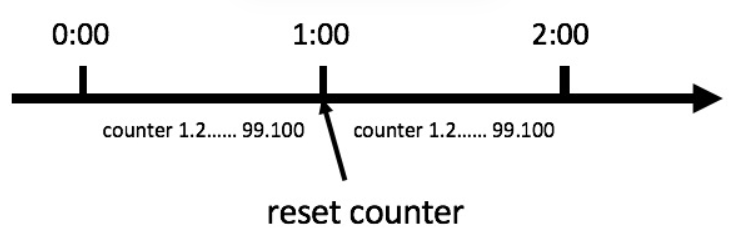
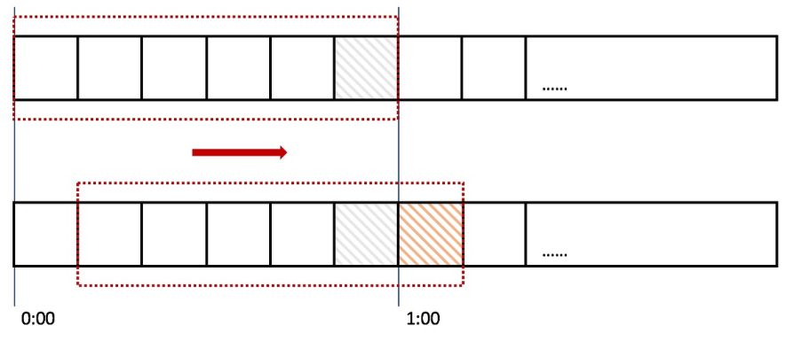
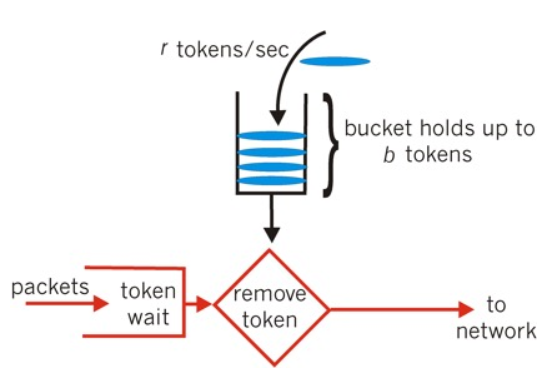

限流的定义和使用场景
在开发高并发系统时，有三把利器来保护系统：缓存、降级和限流。一般来说系统的吞吐量是可以被测算的，为了保证系统的稳定运行，一旦达到的需要限制的阈值，就需要限制流量并采取一些措施以完成限制流量的目的。比如：延迟处理，拒绝处理，或者部分拒绝处理等等。
缓存用于大量读取静态内容；降级直接下线部分功能并返回默认值。如果缓存和降级都不能适用，就采用限流方法。限流本质上是减小访问量，而服务处理能力不变；而降级本质上是降低了部分服务的复杂度，从而支持更高的访问量。就秒杀系统而言显然缓存和降级都不能用，所以需要采取限流来保证系统稳定性。
主要的限流算法和各自的缺点
限流算法主要有 4 种：固定时间窗口（计数器）、滑动时间窗口、令牌桶算法、漏桶算法。
计数器
计数器就是统计记录单位时间内进入系统或者某一接口的请求次数，在限定的次数内的请求则正常接收处理，超过次数的请求则拒绝掉，或者改为异步处理。
缺点：粒度较大，如果卡在计数器失效前后均发送大量请求，服务器可能承担阈值两倍的并发。可能使服务器宕机。

滑动窗口
计数器算法对流量的限制比较粗放，而滑动时间窗口的算法则是对流量进行更加平稳的控制。上面的计数器的单位时间是 1 分钟，而在使用滑动时间窗口，可以把 1 分钟分成 6 格，每格时间长度是 10s，每一格又各自管理一个计数器，单位时间用一个长度为 60s 的窗口描述。一个请求进入系统，对应的时间格子的计数器便会 +1，而每过10s，这个窗口便会向右滑动一格。只要窗口包括的所有格子的计数器总和超过限流上限，便会拒绝后面的请求。因此滑动窗口算法的效果与窗口的大小有关，滑动窗口的窗口越小，则精度越高，相应的资源消耗也更高。

漏桶算法
把请求放置在桶中暂存，并以恒定速度从桶中取请求进行服务。如果桶满，则直接拒绝服务。
优点：漏桶算法限制了流出速率，无论流入速率是多少，流出速率始终恒定。理论上系统不会承受到超出阈值的并发。对系统的保护能力非常强。
缺点：实现复杂；如果桶容量设置较小，高并发下大部分请求都会被丢弃，只会保留最早到达的请求。如果桶容量设置过大，请求容易在桶中超时。
令牌桶

令牌桶即是以一定速率生成 token 并放入桶中，请求进入系统需要先拿到 token 才能进行业务处理，无 token 的请求则拒绝掉。
优点：令牌桶限制平均流入速率，对超过阈值的请求采取拒绝措施以保护系统稳定
缺点：令牌桶没有限制流出速率。如果桶容量设置过大，可能会产生较高的并发。此外，作弊用户一次性获取太多令牌，可能影响正常用户的令牌获取